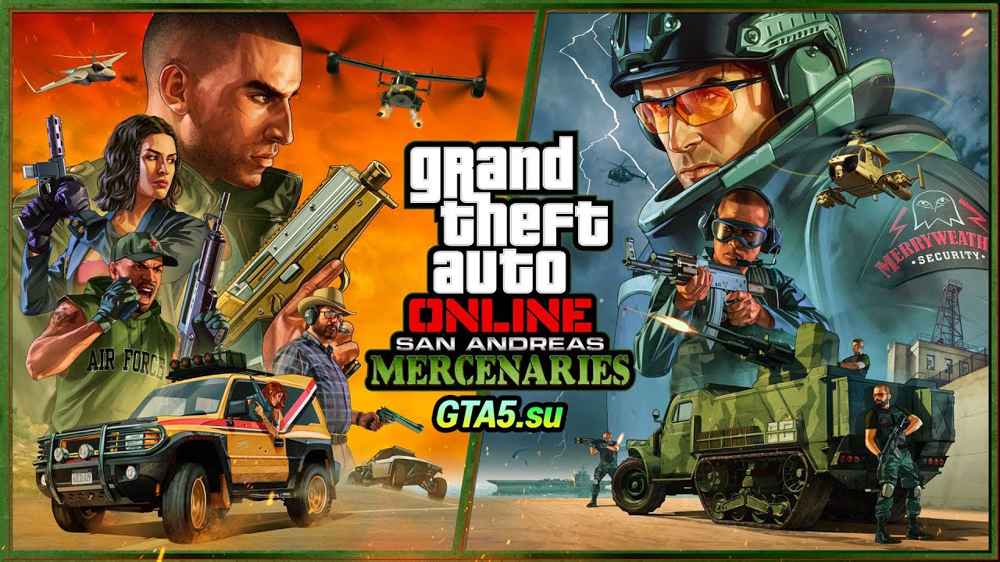

Культовые блокбастеры Grand Theft Auto V и GTA Online.
Добро пожаловать в Лос-Сантос
Чтобы отделаться от внезапно навалившихся проблем, уличному ловчиле, отставному грабителю банков и вселяющему ужас психопату придется провести серию дерзких ограблений и выжить в большом городе, где им нельзя доверять никому, а тем более друг другу.
Grand Theft Auto Online
Окунитесь в мир GTA Online – динамичной и постоянно меняющейся сетевой вселенной, в которой могут находиться одновременно до 30 игроков. Здесь вы сможете пройти путь от мелкого уличного бандита до главаря криминальной империи.
Теперь вам доступны новые мощные модификации для транспорта, карьера персонажа, а также многочисленные улучшения игрового процесса, дополнения и бонусные.

Новые эксклюзивные материалы
Загляните в автомастерскую Hao’s Special Works, чтобы получить доступ к новым элитным модификациям и улучшениям для транспорта.
Новая возможность «Карьера персонажа»
Начните свой путь в GTA Online, сразу имея все необходимое. Выберите одну из четырех карьер – байкер, шеф, владелец ночного клуба или торговец оружием, – а также недвижимость, транспорт и снаряжение.
Новый дизайн меню
Получите мгновенный доступ ко всем возможностям GTA Online прямо из главного меню, включая последние и самые популярные обновления.
Потрясающая графика
Поддержка разрешения до 4K, частота обновления до 60 кадров в секунду, повышенная дальность прорисовки и качество текстур, HDR, трассировка лучей и не только.
Ускоренная загрузка
Почти мгновенный доступ к игровому миру Лос-Сантоса и округа Блэйн, которые теперь загружаются как никогда быстро.
Тактильное управление
Благодаря новому беспроводному контроллеру DualSense для PlayStation 5 с тактильной отдачей и динамическим сопротивлением вы сможете почувствовать каждый игровой момент: направления на источник урона, погодные явления.
3D-звук
Все звуки Лос-Сантоса и округа Блэйн воссозданы с потрясающей точностью, от гула двигателя украденного суперкара и шума перестрелки по соседству до рева вертолета над головой.


.avif)